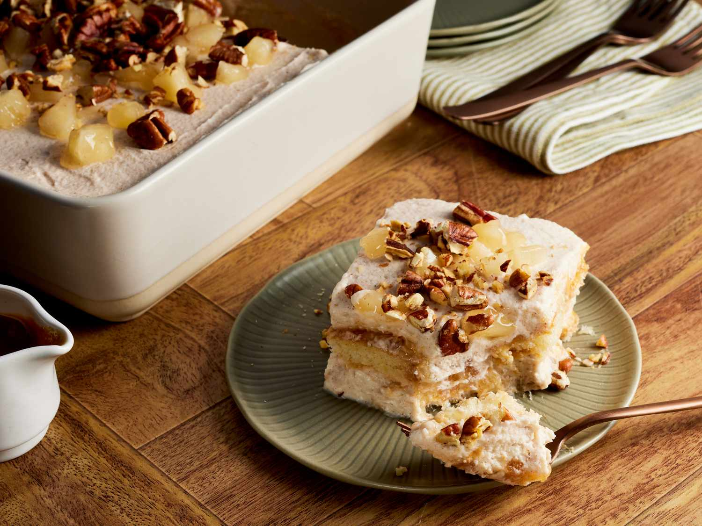

Apple Pie Tiramisu Recipe

Description
Apple pie tiramisu has all the flavor of
your favorite apple pie piled into a creamy,
layered treat. Ladyfingers are soaked in apple cider
instead of espresso. Toasted pecans add a nice
buttery crunch to each bite.
Ingredients
Apple Filling
- 1 (21-ounce) can apple pie
fruit filling or topping (such
as Lucky Leaf)
- 1/2 teaspoon ground cinnamon
- 1/8 teaspoon table salt
- 1/8 teaspoon ground nutmeg
Tiramisu
- 1 (8-ounce) container
mascarpone cheese, softened (such as
BelGioioso))
- 2 cups heavy whipping cream
- 2/3 cup granulated sugar
- 2 teaspoons ground cinnamon
- 1 teaspoon vanilla extract
- 1/4 teaspoon salt
- 1/3 teaspoon ground nutmeg
- 1 cup apple cider
- 24 ladyfinger cookies
- 1/4 cup caramel topping, divided,
plus more for drizzling (such as Smucker's)
- chopped toasted pecans for garnish (optional)
steps
- Gather all ingredients.
- Prepare the Apple Filling: Stir together apple pie fruit
filling, cinnamon, salt, and nutmeg in a bowl until well combined.
Reserve 1/4 cup apple slices from the filling in a small bowl;
roughly mash remaining apple mixture using a potato masher. Set aside.
- Prepare the Tiramisu: Place mascarpone in a large bowl;
set aside. Combine cream, sugar, cinnamon, vanilla, salt, and nutmeg in
a second large bowl and beat with an electric mixer on medium-low
speed until it starts to thicken, about 30 seconds. Increase speed to
medium and beat until soft peaks form, about 2 minutes.
- Gently whisk a third of cream mixture into
mascarpone just until combined and slightly loosened;
fold in remaining cream mixture, in 2 additions using a
whisk, until just combined.
- Pour apple cider in a shallow bowl. Quickly dip and roll
ladyfingers in the cider, one by one, just until coated, about 1
second each. Arrange 12 ladyfingers in a single layer on the bottom of an
8-inch square baking dish; trim or break ladyfingers to fit as needed.
Crumble and arrange any leftover ladyfinger pieces into the gaps and over
the top.
- Spread half of apple filling over ladyfingers. Drizzle evenly with
2 tablespoons of the caramel sauce. Top with half of the mascarpone mixture,
spreading into an even layer. Repeat layers once with remaining ladyfingers,
cider, apple filling, caramel sauce, and mascarpone mixture, piling top high
as needed and swooping into an even layer with the back of a spoon. Discard
any remaining cider.
- Loosely cover with plastic wrap and refrigerate with reserved apple slices
until set, for at least 4 hours or up to 24 hours.
- When ready to serve, chop reserved apple slices. Uncover
and top tiramisu evenly with chopped apples and a drizzle of caramel sauce;
garnish with pecans, is using.